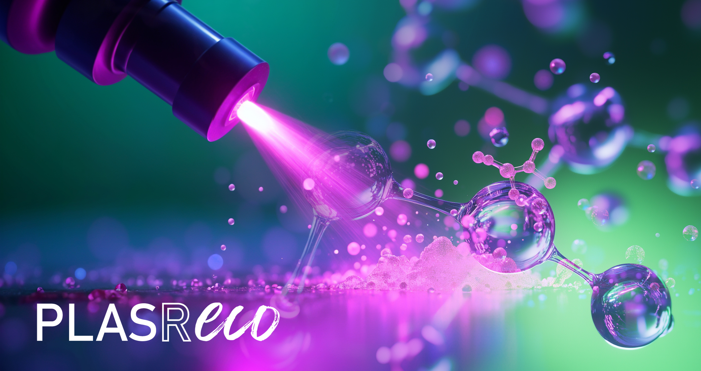

Tech Transfer Session – Tecnología plasma para recubrimientos funcionales libres de PFAS en packaging, textil y cuero
Transfer
Session
15 de julio
De 10.00 a 11.00 h
La sesión, gratuita y en formato online, se enmarca en las actividades de difusión del proyecto PLASRECO, desarrollado por INESCOP y AIMPLAS con el apoyo de IVACE+i y la Generalitat Valenciana.
PLASRECO nace como respuesta a uno de los grandes retos actuales de los sectores del packaging, el textil y el cuero: la necesidad de sustituir tratamientos funcionales basados en PFAS por soluciones más seguras, sostenibles y compatibles con las futuras exigencias normativas.
Durante la jornada se presentará de forma práctica el potencial de la tecnología plasma como herramienta para modificar superficies, activar materiales y aplicar recubrimientos funcionales de bajo impacto ambiental. Se abordarán tanto los fundamentos de la tecnología como sus principales modalidades, incluyendo el plasma de baja presión y el plasma atmosférico.
La sesión mostrará cómo el plasma puede utilizarse para activar superficies y mejorar la adhesión de recubrimientos posteriores, o bien para depositar capas funcionales delgadas directamente sobre distintos sustratos. A partir de esta base, se presentarán aplicaciones potenciales en materiales de packaging, textiles técnicos y cuero, mediante ejemplos visuales, vídeos y casos orientativos.
El objetivo es ofrecer una visión clara, inspiradora y cercana de la tecnología, sin entrar en detalle experimental, para que los asistentes puedan conocer sus posibilidades, entender sus ventajas frente a procesos convencionales y detectar nuevas líneas de innovación vinculadas a superficies funcionales libres de PFAS.

A quién va dirigido
Esta sesión está dirigida a empresas, profesionales y personal técnico de los sectores del packaging, textil, cuero y calzado interesados en conocer nuevas soluciones para la funcionalización de superficies y la sustitución de tratamientos basados en PFAS.
Resultará especialmente útil para responsables de I+D, innovación, sostenibilidad, calidad, producción y desarrollo de producto que trabajen con materiales que requieran repelencia al agua, resistencia a manchas, efecto barrera, comportamiento antiadherente, mejora de adhesión o protección superficial.
Objetivos
El objetivo principal de la sesión es dar a conocer el potencial de la tecnología plasma como solución avanzada para la activación y funcionalización de superficies en distintos materiales industriales.
- Conocer los principios básicos de la tecnología plasma y sus principales modalidades de aplicación.
- Entender la diferencia entre activar una superficie y depositar un recubrimiento funcional mediante plasma.
- Mostrar cómo esta tecnología puede contribuir al desarrollo de soluciones libres de PFAS.
- Presentar aplicaciones potenciales en materiales de packaging, textil y cuero.
- Acercar a las empresas casos de uso, vídeos demostrativos e ideas de aplicación industrial.
- Compartir la visión de INESCOP y AIMPLAS dentro del proyecto PLASRECO.
Programa
Bienvenida e introducción al proyecto PLASRECO
Modera: María Dolores Romero Sánchez – INESCOP
Apertura de la sesión, contextualización del proyecto y presentación de los principales retos asociados a la sustitución de PFAS en packaging, textil y cuero.
Tecnología plasma: conceptos básicos y posibilidades industriales
Víctor M. Serrano Martínez – INESCOP
Introducción visual a la tecnología plasma, diferenciando entre plasma de baja presión y plasma atmosférico, y explicando sus ventajas para el tratamiento de superficies.
Activación superficial y deposición de recubrimientos: dos enfoques complementarios
Carlos Ruzafa Silvestre – INESCOP
Presentación de las principales estrategias de tratamiento mediante plasma: activación superficial para mejorar la adhesión y deposición de capas funcionales sobre materiales complejos.
Recubrimientos libres de PFAS: formulación y diseño de soluciones funcionales
Blai López Rius – AIMPLAS
Enfoque del proyecto para el desarrollo de recubrimientos sostenibles en base silicio, orientados a aportar repelencia a líquidos, resistencia a manchas y comportamiento antiadherente.
Aplicaciones en packaging, textil y cuero: ejemplos, vídeos e ideas de transferencia
Valentina Orlandi – AIMPLAS
Presentación de posibles aplicaciones mediante ejemplos visuales y vídeos demostrativos en envases, materiales celulósicos, textiles técnicos, acabados para cuero y productos relacionados con calzado.
Debate final y turno de preguntas
Modera: María Dolores Romero Sánchez – INESCOP
Espacio abierto para resolver dudas, comentar oportunidades de aplicación industrial y recoger intereses de empresas en torno a la tecnología plasma y los recubrimientos libres de PFAS.